Kogna - Connector Pin outs
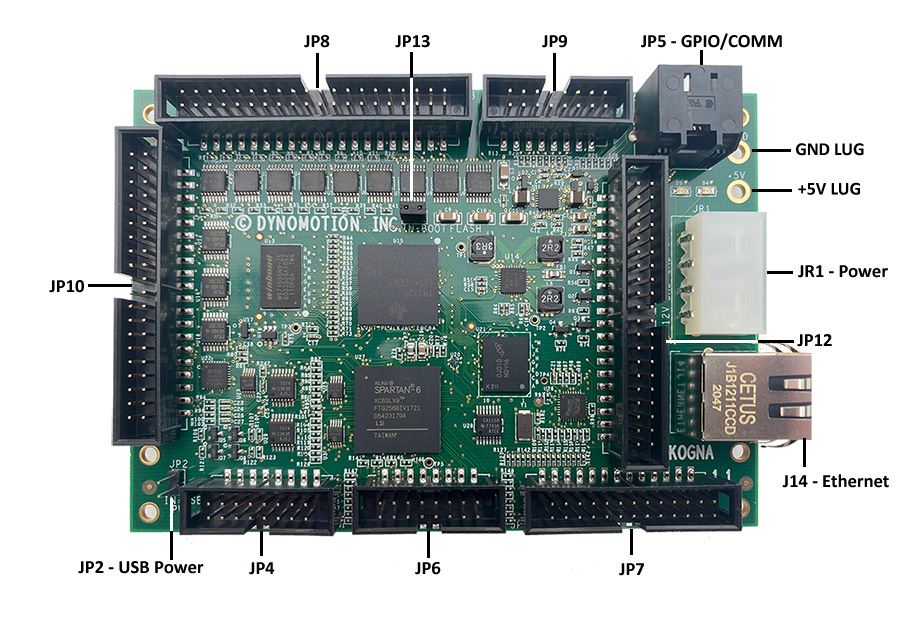
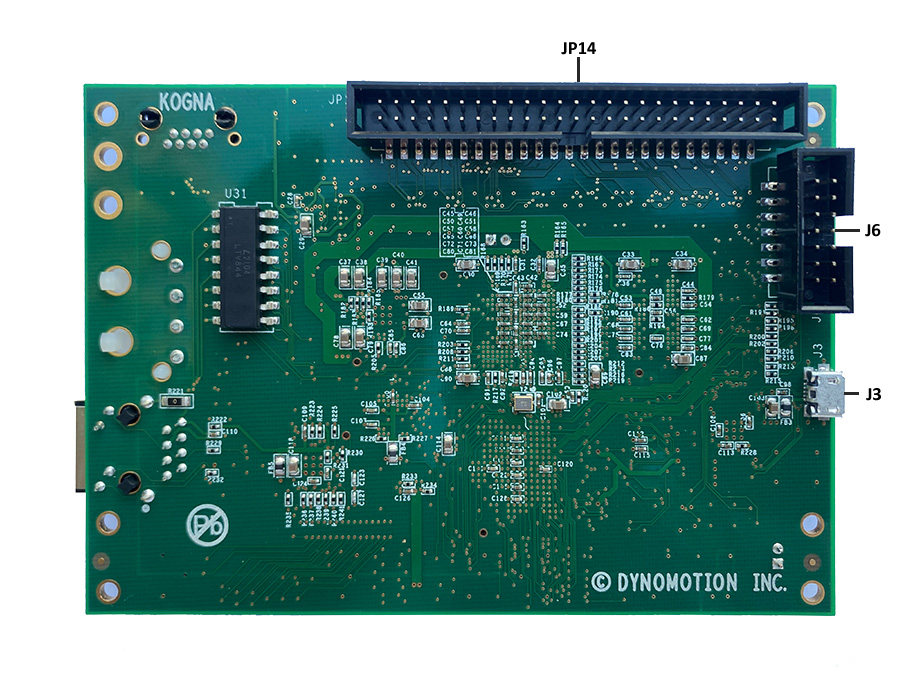
KFLOP Equivalent Connectors J6, JR1, JP2, JP4, JP5, JP6, and JP7
These connectors have equivalent pin outs and functionality as the connectors on KFLOP. See the KFLOP Connector documentation for these connectors here.
JR1 - +5V Power (regulated +/- 5%)
JP5 - GPIO / LV Differential Connector
Kogna Connectors - J14, J3, JP8, JP9, JP10, JP12, JP14, Power Lugs, JP2, JP3
JP8 - Differential Inputs / DACs
JP10 Differential Outputs / ADCS / Hi-Res PWMs
JP12 SPI / RS422/485 / EX_IO / Opto Relay Drivers
JP14 - Differential Inputs / Differential Outputs
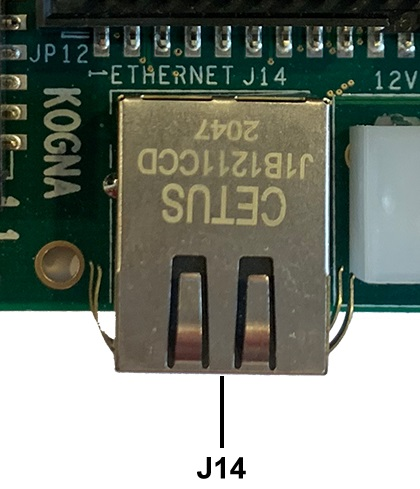
J14 is a standard RJ45 100M Ethernet connector. The metal case is connected to Kogna GND
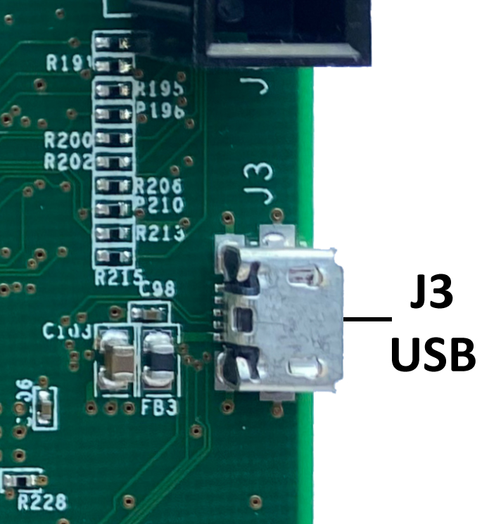
Standard Micro USB Connector. Shield is connected to Kogna GND. See here for more information.
JP8 - Differential Inputs / DACs
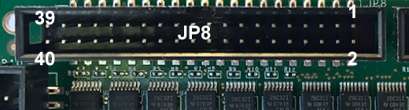
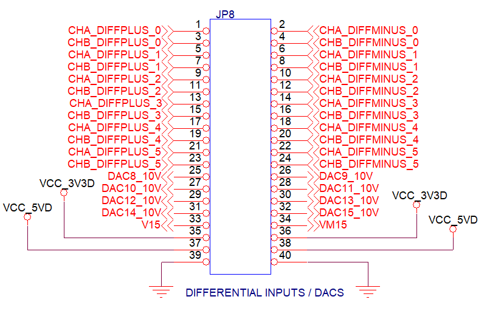
JP8 contains the first half of Kogna's 5V differential inputs (JP14 contains the other half). Enough for 6 A/B quadrature encoders inputs. See Kogna's Encoders for more information. Each encoder has an an A and B input where each A and B input has a + and - input pin. When the + pin is at a higher voltage than the - pin then the input is high. When the + pin is at a lower voltage than the - pin the input is low. The + and - pins have a moderate termination resistance of 470 Ohms. Both the + and - pins must be driven for the input to work properly (neither can be left unconnected). The differential inputs may also read as 12 General Inputs as IO Bits 225 - 236 and displayed on the Digital IO Screen as shown in red below:
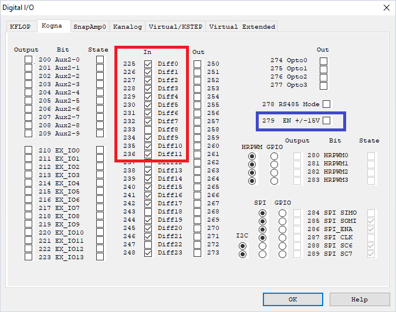
JP8 also contains Kogna's 8 +/-10V Analog DACs referenced as DAC Channels #8 - #15 (#0 - #7 refer to Kanalog DACs which are available with the Kanalog Option Board). Kogna contains an on-board 5V to +/-15V supply generator which is controlled by output Bit 279 and must be turned on in order for the DAC Outputs to be driven. See Digital IO Screen above marked in blue. Note the DAC Outputs will be indeterminate and non-zero until the +/-15V is activated. The current DAC settings are displayed on the Analog Status Screen shown below marked in red. The DACs have 12-bit resolution where +/-2047 counts correspond to +/-10V. All DACs update every Servo Sample time of 90us.
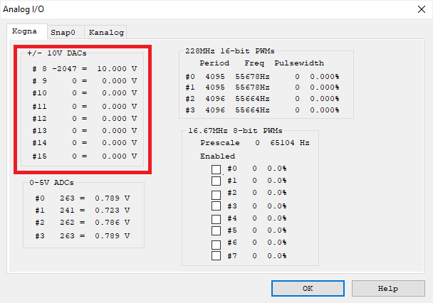
| JP8 Pins | Bit | Description |
|---|---|---|
| 1,2 | 225 | CHA0 - Encoder #8 |
| 3,4 | 226 | CHB0 - Encoder #8 |
| 5,6 | 227 | CHA1 - Encoder #9 |
| 7,8 | 228 | CHB1 - Encoder #9 |
| 9,10 | 229 | CHA2 - Encoder #10 |
| 11,12 | 230 | CHB2 - Encoder #10 |
| 13,14 | 231 | CHA3 - Encoder #11 |
| 15,16 | 232 | CHB3 - Encoder #11 |
| 17,18 | 233 | CHA4 - Encoder #12 |
| 19,20 | 234 | CHB4 - Encoder #12 |
| 21,22 | 235 | CHA5 - Encoder #13 |
| 23,24 | 236 | CHB5 - Encoder #14 |
| JP8 Pin | DAC | Description |
| 25 | 8 | +/-10V Analog DAC |
| 26 | 9 | +/-10V Analog DAC |
| 27 | 10 | +/-10V Analog DAC |
| 28 | 11 | +/-10V Analog DAC |
| 29 | 12 | +/-10V Analog DAC |
| 30 | 13 | +/-10V Analog DAC |
| 31 | 14 | +/-10V Analog DAC |
| 32 | 15 | +/-10V Analog DAC |
| JP8 Pin | Supply | Description |
| 33 | +15V | On-board generated +15V |
| 34 | -15V | On-board generated +15V |
| 35 | +3.3V | On-board generated 3.3V |
| 36 | +3.3V | On-board generated 3.3V |
| 37 | +5V | +5V Supply |
| 38 | +5V | +5V Supply |
| 39 | 0V | Kogna GND |
| 40 | 0V | Kogna GND |
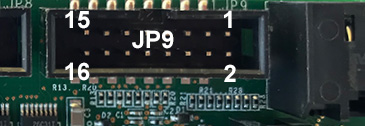
Kogna adds a 3rd 16-pin Aux Connector that is electrically equivalent to KFLOP's Aux #0 and Aux #1 connectors. The Auxiliary connector supplies power, reset, and 10 digital I/O (LVTTL 3.3V only). These digital I/O may be used for general purpose use and are referenced as IO Bits 200 - 209. The first 8 IO (IO200 - IO207) contain 150 Ohm termination resistors (pull downs).
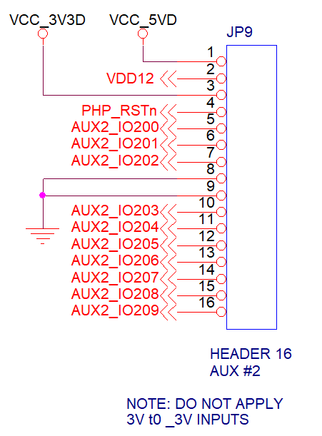
| JP9 Pin | Name | Description |
|---|---|---|
| 1 | VDD5 | +5 Volts Output |
| 2 | VDD12 | +12 Volts Output |
| 3 | VDD33 | +3.3 Volts Output |
| 4 | RESET# | Power up Reset (low true) output |
| 5 | AUX2 IO200 | Gen Purpose LVTTL I/O (3.3V Only) |
| 6 | AUX2 IO201 | Gen Purpose LVTTL I/O (3.3V Only) |
| 7 | AUX2 IO202 | Gen Purpose LVTTL I/O (3.3V Only) |
| 8 | GND | Digital Ground |
| 9 | GND | Digital Ground |
| 10 | AUX2 IO203 | Gen Purpose LVTTL I/O (3.3V Only) |
| 11 | AUX2 IO204 | Gen Purpose LVTTL I/O (3.3V Only) |
| 12 | AUX2 IO205 | Gen Purpose LVTTL I/O (3.3V Only) |
| 13 | AUX2 IO206 | Gen Purpose LVTTL I/O (3.3V Only) |
| 14 | AUX2 IO207 | Gen Purpose LVTTL I/O (3.3V Only) |
| 15 | AUX2 IO208 | Gen Purpose LVTTL I/O (3.3V Only) |
| 16 | AUX2 IO209 | Gen Purpose LVTTL I/O (3.3V Only) |
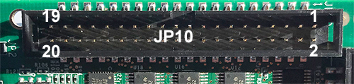
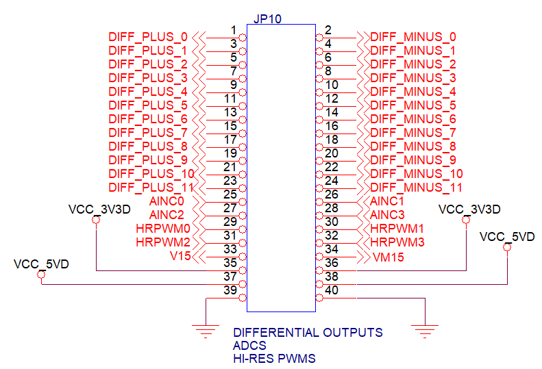
JP10 contains the first half of Kogna's 5V differential outputs (JP14 contains the other half). Enough for 6 Axes of Step/Direction being driven with a Differential Driver. Step/Direction Generators #0 - #5 can be configured to drive pins on JP10. See Kogna's Step/Direction for more information. Each Step/Direction Generator has a Step and Direction Output where each Step and Direction output each has a + and - output pin. When the signal is high the + pin is driven near 5V and the - pin is driven near 0V. When the signal is low the + pin is driven near 0V and the - pin is driven near 5V.
To drive single-ended (non-differential) inputs one of the signals may be used with the other left unconnected. In this case the pin is used as a +5V TTL output. To invert the polarity use the - pin rather than the + pin.
If the associated Step/Direction channel is not enabled the differential outputs may be used as 12 General Outputs as IO Bits 250 - 261. The current state can be toggled from the Digital IO Screen as well as the last commanded state displayed as shown in red below:
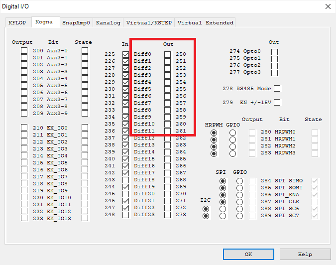
JP10 also contains Kogna's 4 0-5V Analog ADCs referenced as ADC Channels #8 - #11 (#0 - #7 refer to Kanalog ADCs which are available with the Kanalog Option Board).
Each ADC input has a low pass filter with cutoff frequency at 1600Hz. DC Input Impedance > 200K Ohms.
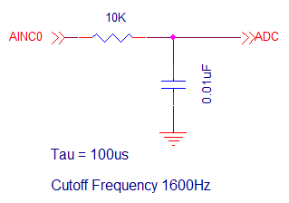
The current ADC readings are displayed on the Analog Status Screen shown below marked in red. The DACs have ~11-bit resolution where 2047 counts correspond to 6.144V, however the inputs have protection diodes to the +5V supply and can not be driven above ~5.5V. All ADCs update every 1620us.
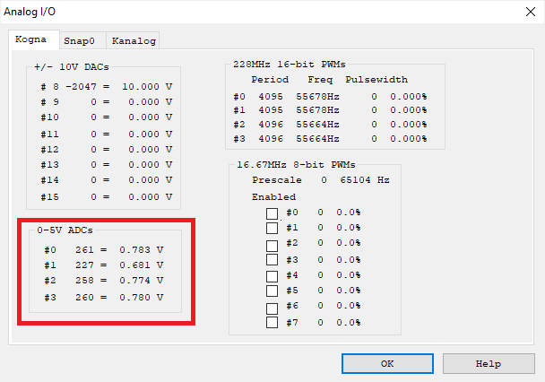
JP10 also contains Kogna's 4 High-Resolution PWMS. Because these are clocked at 228MHz they are able operate at 12-bits of resolution at 55.7KHz. The example below shows how the connector pins can be set to HRPWM mode, and how the Period and and Pulse length can be set. HRPWMs #0 and #1 have a common binary prescaler (divide by 2 ^ N) and a common Period. HRPWMs #2 and #3 do not have a prescale and have independent Period registers. This example is included as HRPWM Example.c.
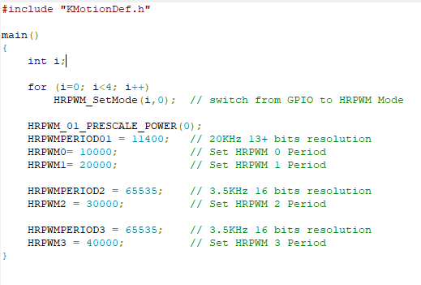
The current HRPWM settings can be observed on the Analog Status Screen as shown in red below.
The original (8) 8-bit 16.67 MHz PWMs, Prescale, and enables are also displayed. When enabled the PWM drives the JP6 Pin otherwise it can be used as a GPIO pins (IO Bits 26 - 33). See Analog Status Screen as shown in blue below.
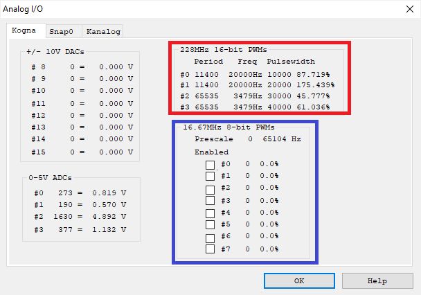
The current HRPWM state is displayed on the Digital IO Screen as shown below in red. These 4 3.3V LVTTL connector pins can be configured as HRPWMs or GPIO (inputs or outputs) IO Bits 280-283. In the Screen below they are shown to be HRPWM mode as shown in blue. The GPIO have fast access times as they are directly connected to Kogna's DSP.
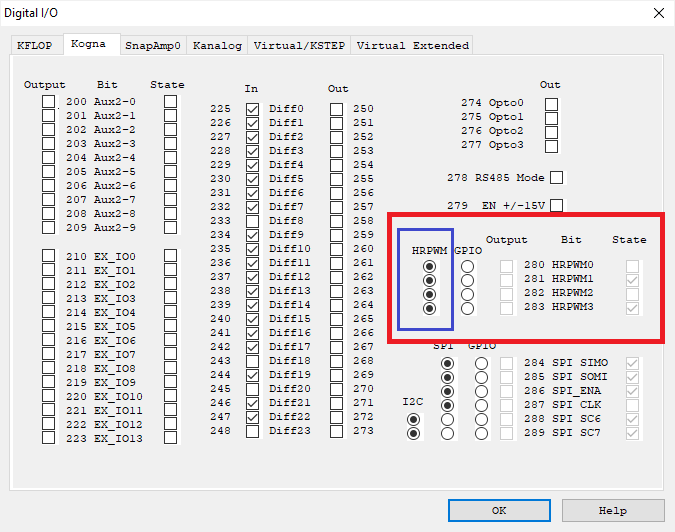
JP10 Pin Descriptions
| JP10 Pins | Bit | Description |
|---|---|---|
| 1,2 | 250 | Step #0 |
| 3,4 | 251 | Direction #0 |
| 5,6 | 252 | Step #1 |
| 7,8 | 253 | Direction #1 |
| 9,10 | 254 | Step #2 |
| 11,12 | 255 | Direction #2 |
| 13,14 | 256 | Step #3 |
| 15,16 | 257 | Direction #3 |
| 17,18 | 258 | Step #4 |
| 19,20 | 259 | Direction #4 |
| 21,22 | 260 | Step #5 |
| 23,24 | 261 | Direction #5 |
| JP10 Pin | ADC | Description |
| 25 | 8 | 0-5V ADC |
| 26 | 9 | 0-5V ADC |
| 27 | 10 | 0-5V ADC |
| 28 | 11 | 0-5V ADC |
| JP10 Pin | PWM | Description |
| 29 | 0 | Hi-Res PWM |
| 30 | 1 | Hi-Res PWM |
| 31 | 2 | Hi-Res PWM |
| 32 | 3 | Hi-Res PWM |
| JP10 Pin | Supply | Description |
| 33 | +15V | On-board generated +15V |
| 34 | -15V | On-board generated +15V |
| 35 | +3.3V | On-board generated 3.3V |
| 36 | +3.3V | On-board generated 3.3V |
| 37 | +5V | +5V Supply |
| 38 | +5V | +5V Supply |
| 39 | 0V | Kogna GND |
| 40 | 0V | Kogna GND |
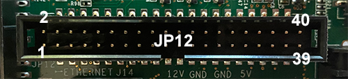
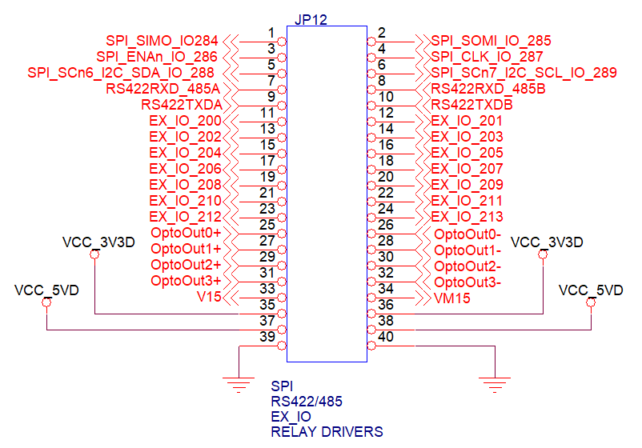
JP12 contains (6) 3.3V LVTTL SPI pins connected directly to Kogna's 2-16 bit hardware SPI 1 peripheral that can theoretically operate up to 76 MHz. 3 SPI Enable pins are provided. See the TI C6748 Technical Reference Manual for operation.
(2) pins can also operate as I2C Pins connected directly to Kogna's hardware I2C0 peripheral that can operate up to 400KHz.
4 of the 6 pins may be used as SPI pins or GPIO pins. The GPIO pins are IO Bits 284 - 287.
2 of the 6 pins may be used as SPI pins or I2C pins or GPIO pins. The GPIO pins are IO Bits 288 - 287.
C Functions or Script Commands can be used to change the modes of the Pins.
// Controls 6 DSP Pins for SPI/I2C or GPIO (last 2 can be I2C)
void SPI_SetMode(int chan, int GPIO); // Set SPI mode as SPI or GPIO, 1=GPIO 0=SPI 2=I2C
int SPI_GetMode(int chan); // Get SPI mode as SPI or GPIO or I2C, 1=GPIO 0=SPI 2=I2C
The current mode is displayed on the Digital IO Screens and can also be modified. See in red below.
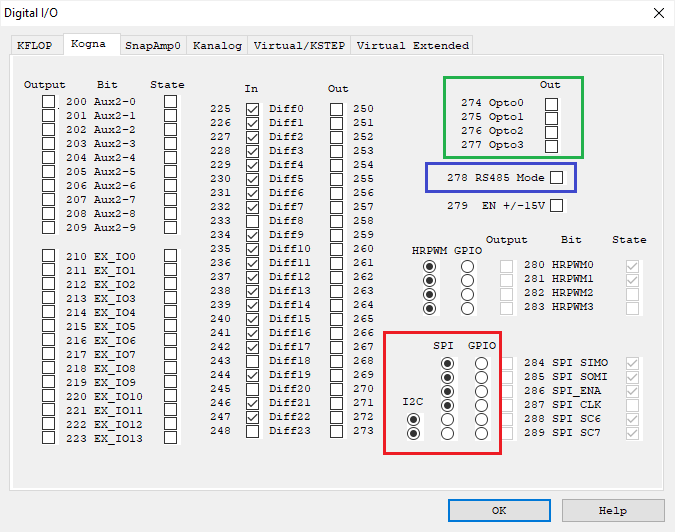
JP12 also contains 5V differential signals interfaced to Kogna's hardware UART that operates up to 1.5Mbaud. 4 pins provide RS422/RS485 support with 5V differential Transmit and Receive signals. In RS422 mode 2 pins are used for the differential Transmit signal and 2 pins are used for the differential receive signal. In RS485 mode both Transmit and Receive operate on the same 2 pins (the other 2 pins are not used). Kogna's FPGA provides automatic output drive enable when in RS485 mode. Both differential pin pairs have 120 Ohm termination. See the circuit diagram below.
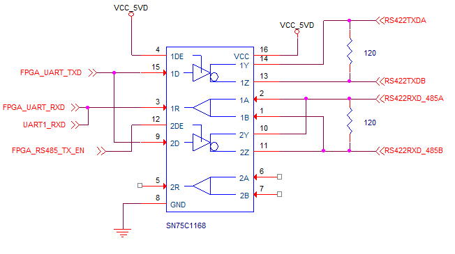
IO Bit 278 on selects RS485 mode and off selects RS422 mode. See the Digital IO Screen above in blue. The C Function below can be used to configure the UART for baud rate, word size, parity, and to select RS422 or RS485 mode. See the BufferedRS485Master.c and BufferedRS485 Slave Echo.c for an example of how 2 Kogna's might communicate over RS485.
// Rate to 1.5MBaud, nbits 5-8, Enable Parity adds a bit, mode 1=RS485 0-RS422
void RS422_SetBaudRate(int Rate, int nBits, int EnableParity, int ParityOdd, int RS485_Mode);
JP12 also contains (14) 3.3 V LVTTL Extended GPIO Pins EX_IO 0 - 13 and as IO Bits 200 - 213. The current IO direction and State is displayed on the Digital IO Screen. See in red below.
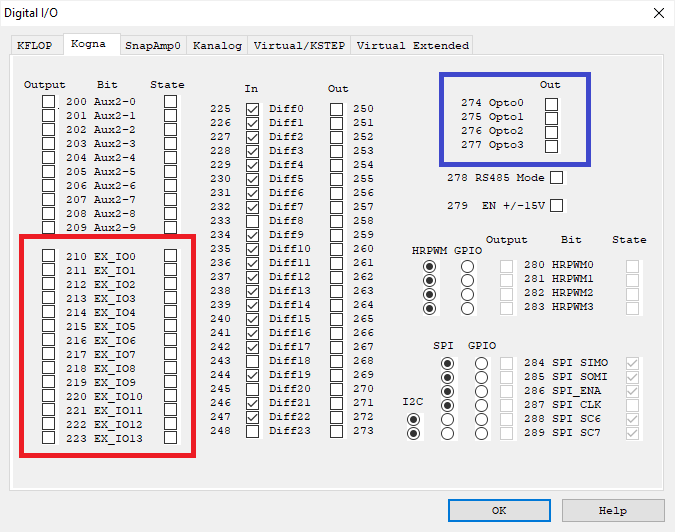
JP12 also contains (4) Opto Isolated Relay Driver Outputs rated for up to 30V @ 0.2A. The Optos are controlled by IO Bits 274-277. Current State can be displayed and controlled using the Digital IO Screen, See above in blue.
The circuit below is used.
For load currents < 0.5ma the on state voltage drop is < 0.35V
For load currents < 0.2A the on state voltage drop is < 0.8V
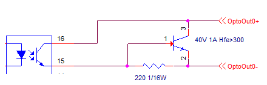
JP12 Pin Descriptions
| JP12 Pin | Bit | SPI / I2C |
|---|---|---|
| 1 | 284 | SPI SIMO |
| 2 | 285 | SPI SOMI |
| 3 | 286 | SPI ENAn |
| 4 | 287 | SPI CLK |
| 5 | 288 | SPI SCn6 / I2C SDA |
| 6 | 289 | SPI SCn7 / I2C SCL |
| JP12 Pin | RS242/485 | |
| 7 | --- | RS422 RXD / 485 A |
| 8 | --- | RS422 RXD / 485 B |
| 9 | --- | RS422 TXD A |
| 10 | --- | RS422 TXD B |
| JP12 Pin | Bit | EX IO / Step/Direction |
| 11 | 210 | Gen Purpose LVTTL I/O (3.3V Only) / Step 12 |
| 12 | 211 | Gen Purpose LVTTL I/O (3.3V Only) / Direction 12 |
| 13 | 212 | Gen Purpose LVTTL I/O (3.3V Only) / Step 13) |
| 14 | 213 | Gen Purpose LVTTL I/O ((3.3V Only) / Direction 13) |
| 15 | 214 | Gen Purpose LVTTL I/O ((3.3V Only) / Step 14) |
| 16 | 215 | Gen Purpose LVTTL I/O ((3.3V Only) / Direction 14 |
| 17 | 216 | Gen Purpose LVTTL I/O ((3.3V Only) / Step 15 |
| 18 | 217 | Gen Purpose LVTTL I/O ((3.3V Only) / Direction 15 |
| 19 | 218 | Gen Purpose LVTTL I/O ((3.3V Only) |
| 20 | 219 | Gen Purpose LVTTL I/O ((3.3V Only) |
| 21 | 220 | Gen Purpose LVTTL I/O ((3.3V Only) |
| 22 | 221 | Gen Purpose LVTTL I/O ((3.3V Only) |
| 23 | 222 | Gen Purpose LVTTL I/O ((3.3V Only) |
| 24 | 223 | Gen Purpose LVTTL I/O ((3.3V Only) |
| JP12 Pins | Bit | Opto Isolated Relay Drivers |
| 25, 26 | 274 | Opto Out 0 +/- |
| 27,28 | 275 | Opto Out 1 +/- |
| 29,30 | 276 | Opto Out 2 +/- |
| 31,32 | 277 | Opto Out 3 +/- |
| JP12 Pin | Supply | Description |
| 33 | +15V | On-board generated +15V |
| 34 | -15V | On-board generated +15V |
| 35 | +3.3V | On-board generated 3.3V |
| 36 | +3.3V | On-board generated 3.3V |
| 37 | +5V | +5V Supply |
| 38 | +5V | +5V Supply |
| 39 | 0V | Kogna GND |
| 40 | 0V | Kogna GND |
JP14 - Differential Inputs / Differential Outputs

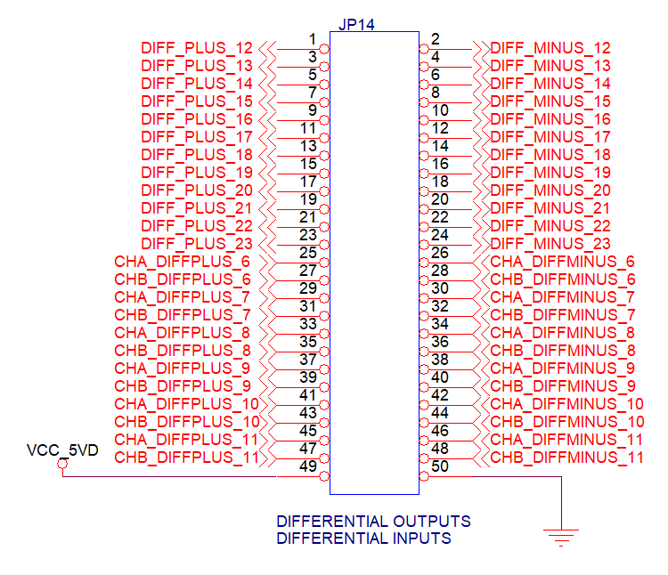
JP14 contains the second half of Kogna's 5V differential outputs (JP10 contains the other half). Enough for 6 Axes of Step/Direction being driven with a Differential Driver. Step/Direction Generators #6 - #11 can be configured to drive pins on JP14. See Kogna's Step/Direction for more information. Each Step/Direction Generator has a Step and Direction Output where each Step and Direction output each has a + and - output pin. When the signal is high the + pin is driven near 5V and the - pin is driven near 0V. When the signal is low the + pin is driven near 0V and the - pin is driven near 5V.
To drive single-ended (non-differential) inputs one of the signals may be used with the other left unconnected. In this case the pin is used as a +5V TTL output. To invert the polarity use the - pin rather than the + pin.
If the associated Step/Direction channel is not enabled the differential outputs may be used as 12 General Outputs as IO Bits 262 - 273. The current state can be toggled from the Digital IO Screen as well as the last commanded state displayed as shown in red below:
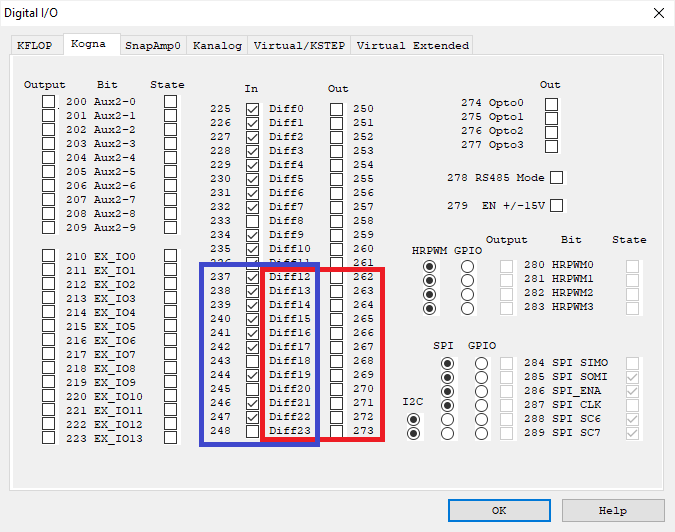
JP14 contains the second half of Kogna's 5V differential inputs (JP8 contains the other half). Enough for 6 A/B quadrature encoders inputs. See Kogna's Encoders for more information. Each encoder has an an A and B input where each A and B input has a + and - input pin. When the + pin is at a higher voltage than the - pin then the input is high. When the + pin is at a lower voltage than the - pin the input is low. The + and - pins have a moderate termination resistance of 470 Ohms. Both the + and - pins must be driven for the input to work properly (neither can be left unconnected). The differential inputs may also read as 12 General Inputs as IO Bits 237 - 248 and displayed on the Digital IO Screen as shown in blue above.
JP14 Pin Descriptions
| JP14 Pins | Bit | Description |
|---|---|---|
| 1,2 | 262 | Step #6 |
| 3,4 | 263 | Direction #6 |
| 5,6 | 264 | Step #7 |
| 7,8 | 265 | Direction #7 |
| 9,10 | 266 | Step #8 |
| 11,12 | 267 | Direction #8 |
| 13,14 | 268 | Step #9 |
| 15,16 | 269 | Direction #9 |
| 17,18 | 270 | Step #10 |
| 19,20 | 271 | Direction #10 |
| 21,22 | 272 | Step #11 |
| 23,24 | 273 | Direction #11 |
| JP14 Pins | Bit | Description |
| 25,26 | 237 | CHA6 - Encoder #14 |
| 27,28 | 238 | CHB6 - Encoder #14 |
| 29,30 | 239 | CHA7 - Encoder #15 |
| 31,32 | 240 | CHB7 - Encoder #15 |
| 33,34 | 241 | CHA8 - Encoder #16 |
| 25,36 | 242 | CHB8 - Encoder #16 |
| 37,38 | 243 | CHA9 - Encoder #17 |
| 39,40 | 244 | CHB9 - Encoder #17 |
| 41,42 | 245 | CHA10 - Encoder #18 |
| 43,44 | 246 | CHB10 - Encoder #18 |
| 45,46 | 247 | CHA11 - Encoder #19 |
| 47,48 | 248 | CHB11 - Encoder #19 |
| JP14 Pin | Supply | Description |
| 49 | +5V | +5V Supply |
| 50 | 0V | Kogna GND |
Kogna Power Lugs
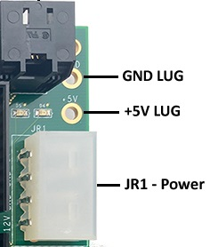
Kogna has 2 Power Lugs GND and +5V that are connected in parallel to GND and +5V on JR1. These can be used to supply (or extract) +5V and GND. They are designed to work with a 4-40 screw/nut. All other Kogna Mounting holes are isolated.
JP2 USB Power Jumper
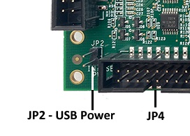
Jumper JP2 connects USB Power coming in Micro USB Connector J3 to supply KFLOP with +5V. USB Power is limited to 500ma and is sufficient to power Kogna with limited IO loads and the +/-15V Generator turned off. If +/-10V Analog DAC outputs are used the +/-15V Generator must be turned on and more power supplied to Kogna. A +5V @ 2A supply should be sufficient. This is also the case with many outputs driving loads with significant current. For example 50 outputs all driving 10ma loads would increase current by ~500ma. Alternately a USB charger that supplies greater current might be used to power via J3 but obviously the USB COM Port would then not be functional.
JP13 Flash Boot Jumper
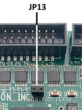
Jumper JP3 should normally always be installed to boot from Kogna's Flash memory. Kogna boots in 2 phases. First a primary boot followed by a secondary boot to the latest installed firmware and possibly User Flashed programs. In the case of a corrupted Version of Firmware or bad Flashed User Program Kogna could crash or freeze after booting. After primary booting Kogna delays while flashing its LEDs for approximately 3 seconds. If JP13 is removed during the delay Kogna will remain in the Primary boot loader to allow recovery by Flashing New Version.